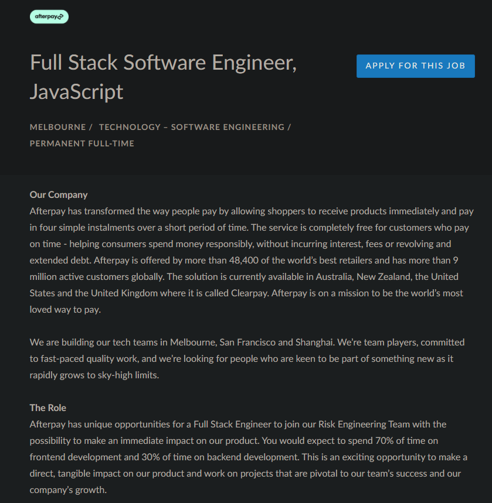

PERSONAL INFORMATION
I was born in Adelaide but moved to Cairns when I was less than a year old and lived there for 15 years, before moving back to South Australia. After graduating, I moved to Melbourne in order to pursue higher education study. I have completed a Cert 3 and 4 in Information Technology through TAFE SA, focusing on the Website Development branch.
I also have a pet cockatiel called Sam, who knows how to whistle a lot of songs, such as September.
INTEREST IN IT
My interest in IT started when I got my first gaming console as a child. I got really into playing games and wanted to try it on the computer instead, so I would use my Mum's laptop. This led to me being interested in computer hardware and eventually I was able to build my own computer when I was 11. Since then, I have built a few more and have done a Certificate 3 and 4 in IT & Programming. Although I was initially interested in hardware and the physical components of IT, it has grown into me wanting to know about every aspect.
I chose to enrol in RMIT as it is the first university that caught my eye when I moved to Melbourne. As they are a leading university in Information Technology, I believe that they can give me the education I require to pursue and excel in an IT based career. I am doing this course to gain more knowledge in IT in general as well as a better understanding of databases and Cyber Security. My end goal is to hopefully kickstart my career in IT.
IDEAL JOB
Full Stack Developer (Afterpay)

As I am highly passionate about IT and Computer Systems, a role I find truly interesting and suitable for me is a Full Stack Developer/Software Engineer.
Full Stack Developers are expected to be knowledgeable in both front and back-end languages, such as:
- HTML
- C#
- JavaScript
- CSS
- PHP
- Python
Front-end development focuses on the user interface of a website or application and making the user experience as seamless as possible. Prioritising the user experiences, Full Stack Developers take on the role of creating and maintaining websites and application user interfaces.
Back-end development is what users are not able to see, using code so that websites and applications are able to communicate with databases. Rather than focusing on the user interface, website functionality is the main concern of a back-end developer.
Although formal qualifications and knowledge is a must, Full-Stack developers should also be able to work proficiently in a team with good communication skills, problem solving skills and have good attention to detail.
Currently I only know the basics of languages like HTML and Java, but I am enthusiastic to learn and fast at picking up programming languages. By completing a Bachelor Degree in Information Technology, I can continue to improve my skills and work my way to being a Full-Stack Developer.
PERSONAL PROFILE

The ‘What’s Your Learning Style?’ test results show that I am mostly a tactile learner (40%), which I think accurately describes me as I like to learn hands on and experiment with problems manually. For instance, instead of looking up a guide on how to fix a broken headset, I would much rather the challenge of taking it apart and learning about it along the way. This test result fits in with my ‘16 Personalities’ test result, ISTP-T or ‘Virtuoso’, and includes the traits of observation, thinking and prospecting. Virtuosos are described as people with an individualistic mindset and tend to pursue goals by themselves rather than relying on external connections. As someone who would rather take something apart and putting it back together and learning about it along the way instead of following a guide, I think this is a good description of my personality.
I could see how my learning style and personality could conflict with others in a team setting, as I like to work solo and tackle problems in interesting and challenging ways where others may prefer to take a different route. However, my individualism can also be seen as a positive trait, as my solo work ethic means that I can rely on my own resourcefulness and motivation to get the task ahead done, even if my approach may differ from others. My individualistic traits and self-reliance mean that I have less preference on personality types, provided my group members contribute their parts and offer their ideas. However, I realise that my solo work ethic may affect others with more dependent personality types. I would have to consider others’ ideas and work ethics, be more accepting of these differences and make sure that I can compromise a little of my individualism to maximise my group’s effectiveness.
PROJECT IDEA
Overview and Motivation
An application/game that has interactive 3D models of computer components and allows users to go in-depth and learn how they work. Users that are interested in building a computer can check compatibility between components and see what their computer will look like before they build it. As technology is advancing at a rapid rate, younger people are expected to have a high amount of knowledge and are generally very interested. If they want to go more in depth a lot of reading is often required and it may make their interest waver. By making something that is interactive and can even have an element of gameplay involved, it is possible for users to learn and retain more information.
A similar application that exists is a game called PC Building Simulator (Irregular Corporation, 2020), in which the user can select individual components and build their own computer. While this is a good idea to teach users how to build a computer, they are already expected to have the sufficient amount of knowledge needed to choose the correct components and aren’t able to check the compatibility.
Description
Rather than being a basic application with a simple UI, it will be presented more like a game and be as interactive as possible. Real-time price listings of components from different online retailers will be listed so that the user can have all the information in one place and choose what component they want to look at, with filters included for ease of use.
When a part is chosen, the user can look at a detailed 3D model that can be expanded to show the inside of the component, with in depth information included. People interested in building a computer can check the compatibility of their chosen parts, and display them as a full system that they put together themselves.
Tools and Technologies
An open-source 3D modelling software to make the models of the components is Blender, which is free, used by professionals and good quality. Unity will be used to design and program the game and is also free, with access to tutorials and game design assets that can be bought or used for free. Unreal Engine 4 is another option for game design, but it has a high learning curve compared to Unity.
Skills Required
Strong software design and development skills are needed, preferably in C++ but using Unity with C# is a viable option. An understanding of how to use Blender in order to create 3D models is also required, but if needed assets can be bought.
Outcome
If the project is successful, users will have an all-in-one educational package that can be used in schools and at home to teach them about computer architecture.